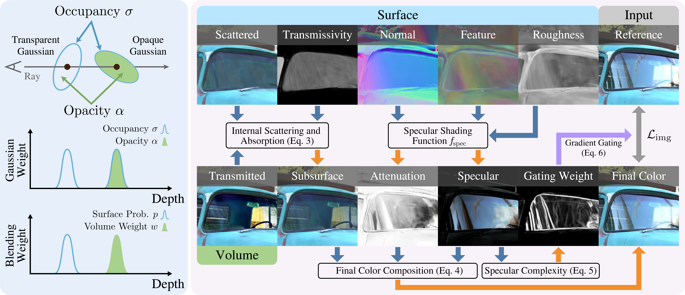

3D Gaussian Splatting (3DGS) enables real-time novel view synthesis with high visual quality. However, existing methods struggle with semi-transparent specular surfaces that exhibit both complex reflections and clear transmission, often producing blurry reflections or overly occluded transmission. To address this, we present RT-Splatting, a framework that disentangles each Gaussian's geometric occupancy from its optical opacity. This factorization yields a unified surface-volume scene representation with a single set of Gaussian primitives. Our hybrid renderer interprets this representation both as a surface to capture high-frequency reflections and as a volume to preserve clear transmission. To mitigate the ambiguity in jointly optimizing reflection and transmission, we introduce Specular-Aware Gradient Gating, which suppresses misleading gradients from highly specular regions into the transmission branch, effectively reducing distracting floaters. Experiments on challenging semi-transparent scenes show that RT-Splatting achieves state-of-the-art performance, delivering high-fidelity reflections and clear transmission with real-time rendering. Moreover, our factorization naturally enables flexible scene editing.

Overview of RT-Splatting.
Here we demostrate side-by-side videos comparing our method to top-performing baselines across different
captured scenes.
Select a scene and a baseline method below:
Here we demostrate side-by-side videos comparing our method to top-performing baselines across different
captured scenes.
Select a scene and a baseline method below:
@inproceedings{RT-Splatting,
title = {{RT-Splatting}: Joint Reflection-Transmission Modeling with Gaussian Splatting},
author = {Shi, Ji and Ying, Xianghua and Xing, Bowei and Guo, Ruohao and Yue, Wenzhen},
booktitle = {CVPR},
year = {2026},
}